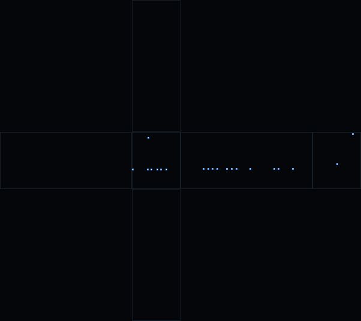
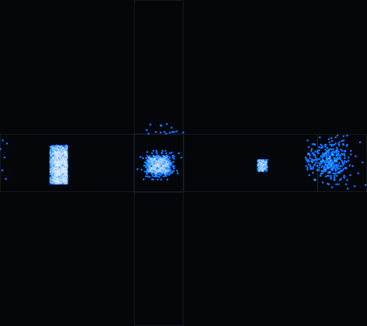
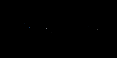
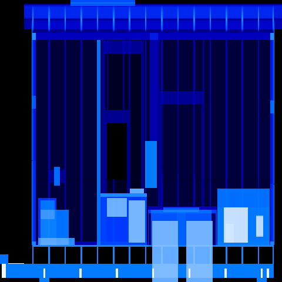
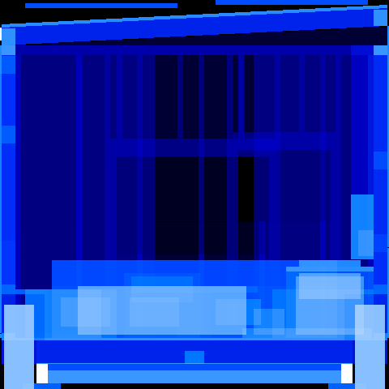
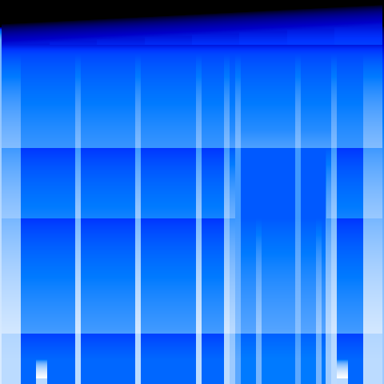

The building's own surface, unfolded flat, with every escaping ray plotted where it actually left. Roof on top, underside at the bottom, the four walls in the middle band. A sealed building develops black. A seam develops as a line, because a seam is a line.
The second plate is the control group, on the same exposure: the rays that left through a door or a window. If it is empty, the openings are not openings — which is exactly what it said the first time it was run.



Parallel rays through the whole thing, carrying how much material each one passed through. This finds nothing on its own; it shows density, and a part that is not where anyone thought it was shows up as a shadow in the wrong place.



| rays | face | at | extent (in) | bounded by |
|---|---|---|---|---|
| 2 | +y | 36.4, 248, 41.7 | 7.7 × 0 × 0.1 | shell.N.win_bed.below (7.5 in) cripple.N.36.sill (8.0 in) shell.N.win_bed.near (9.9 in) |
| 2 | +y | 56.4, 248, 41.7 | 7.7 × 0 × 0.1 | shell.N.win_bed.below (7.5 in) cripple.N.52.sill (8.7 in) |
| 1 | +x | 101.5, 9.8, 43.7 | 0 × 0 × 0 | shell.E.win_galley.near (0.0 in) shell.E.win_galley.below (0.1 in) stud.E.17 (6.2 in) stud.S.97 (7.5 in) |
| 1 | +x | 101.5, 49.8, 43.7 | 0 × 0 × 0 | shell.E.win_galley.near (0.0 in) shell.E.win_galley.below (0.1 in) stud.E.49 (0.6 in) |
| 1 | +x | 101.5, 129.8, 43.7 | 0 × 0 × 0 | shell.E.win_galley.far (0.0 in) shell.E.win_galley.below (0.1 in) stud.E.129 (0.6 in) heater (7.0 in) |
| 1 | +x | 101.5, 149.8, 43.7 | 0 × 0 × 0 | shell.E.win_galley.far (0.0 in) shell.E.win_galley.below (0.1 in) stud.E.145 (4.3 in) outlet.2 (7.8 in) |
| 1 | +x | 101.5, 169.8, 43.7 | 0 × 0 × 0 | shell.E.win_galley.far (0.0 in) shell.E.win_galley.below (0.1 in) stud.E.177 (6.2 in) stud.E.161 (8.3 in) |
| 1 | +x | 101.5, 189.8, 43.7 | 0 × 0 × 0 | shell.E.win_galley.far (0.0 in) shell.E.win_galley.below (0.1 in) stud.E.193 (2.3 in) |
| 1 | +y | 0.3, 248, 41.6 | 0 × 0 × 0 | shell.N.win_bed.below (7.5 in) shell.N.win_bed.near (7.5 in) stud.W.239 (8.0 in) shell.W.door_entry.far (8.0 in) |
| 1 | +y | 34, 248, 109.1 | 0 × 0 × 0 | roof.cover (2.4 in) gable.N.2 (7.6 in) rafter.239 (8.0 in) shell.N.win_bed.above (8.1 in) |
| 1 | -y | 16.7, -32, 117 | 0 × 0 × 0 | — |
| 1 | -y | 50.8, -32, 53.6 | 0 × 0 × 0 | — |
| 1 | +x | 101.5, 40.1, 43.7 | 0 × 0 × 0 | shell.E.win_galley.near (0.0 in) shell.E.win_galley.below (0.1 in) stud.E.33 (6.6 in) stud.E.49 (7.9 in) |
| 1 | +x | 101.5, 100.1, 43.7 | 0 × 0 × 0 | shell.E.win_galley.far (0.0 in) shell.E.win_galley.below (0.1 in) stud.E.97 (2.6 in) jack.win.galley.1 (4.6 in) |
| 1 | +x | 101.5, 140.1, 43.7 | 0 × 0 × 0 | shell.E.win_galley.far (0.0 in) shell.E.win_galley.below (0.1 in) stud.E.145 (3.9 in) outlet.2 (7.6 in) |
| 1 | +x | 101.5, 180.1, 43.7 | 0 × 0 × 0 | shell.E.win_galley.far (0.0 in) shell.E.win_galley.below (0.1 in) stud.E.177 (2.6 in) |
| 1 | +x | 101.5, 200.1, 43.7 | 0 × 0 × 0 | shell.E.win_galley.far (0.0 in) shell.E.win_galley.below (0.1 in) stud.E.193 (6.6 in) stud.E.209 (7.9 in) |
| 1 | +y | 72.5, 248, 41.7 | 0 × 0 × 0 | shell.N.win_bed.far (7.5 in) shell.N.win_bed.below (7.5 in) king.win.bed.1 (8.0 in) jack.win.bed.1 (8.1 in) |